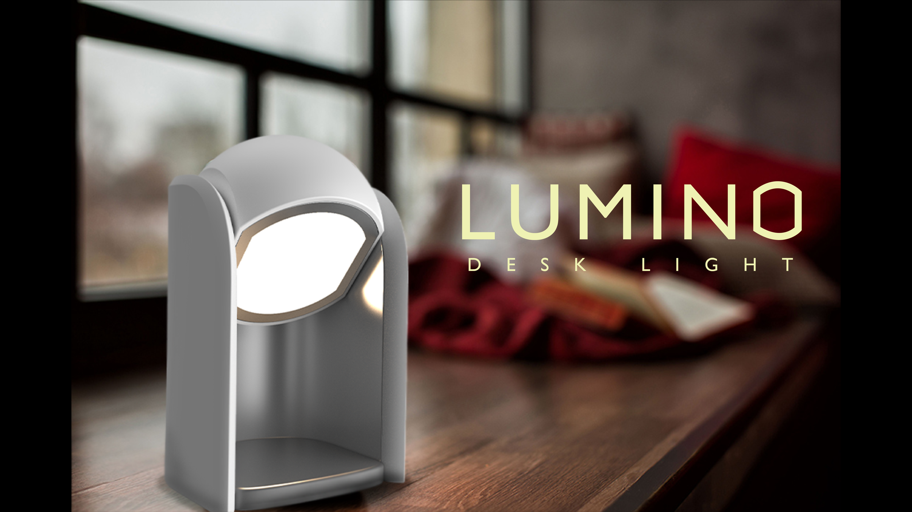
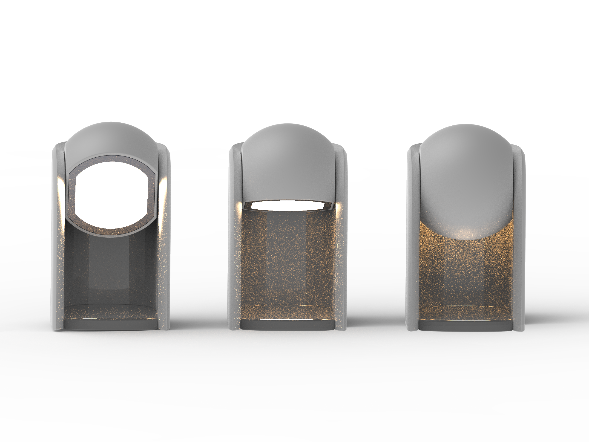
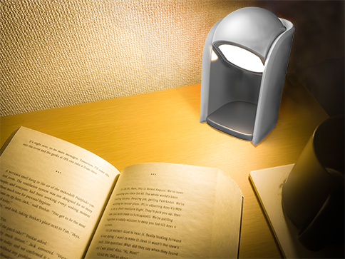
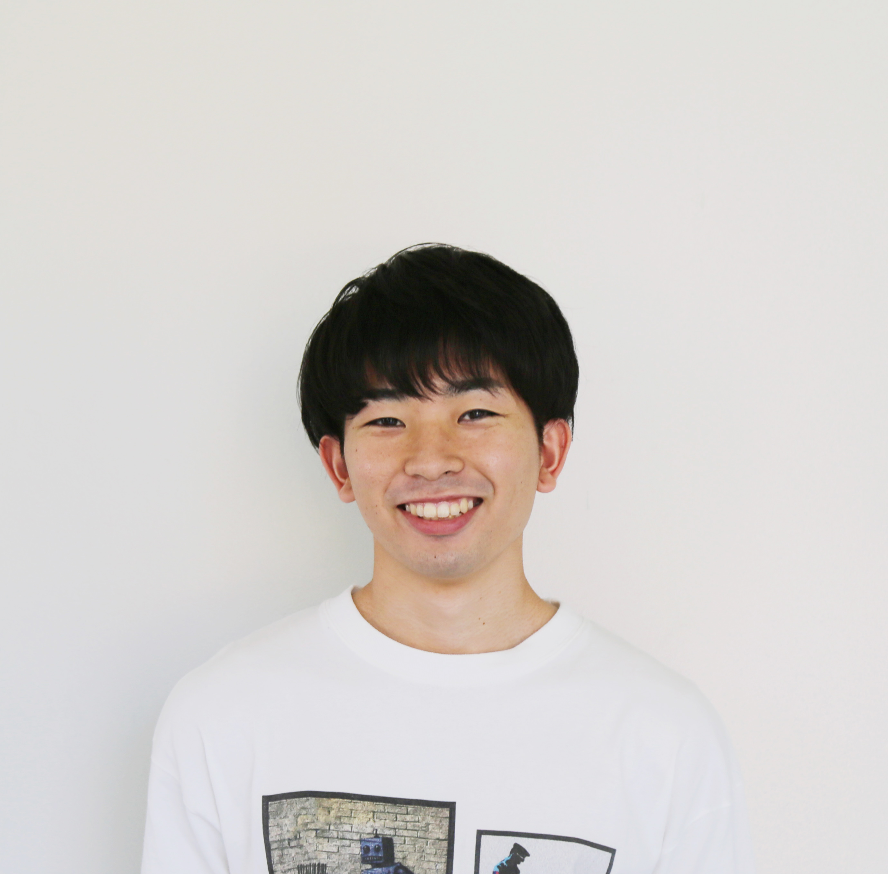

LUMINO
名古屋市立大学 芸術工学部
産業イノベーションデザイン学科 2年 新井 大地
LUMINOは光の移り変わりによって、ゆっくりとした時間を演出するデスクライトです。時間が経つにつれて姿が移り変わっていく月の満ち欠けに着想を得ました。段々と変化していくその様子は、時間の流れをより感じやすくすると共に、リラックス効果を生み出すのではないかと考えました。
光の移り変わり
このライトは光源をもつ部分が時間経過とともに回転していきます。最初はその光が直接周辺を照らしますが、段々とその光は内側へと向いていきます。最終的には間接照明のようなかたちで周辺を照らすようになります。光の動きや強さの変化によって、寝る前のリラックスタイムを演出してくれます。

現代の暮らしにゆとりを
デジタルなものに囲まれている現代の生活では、時間があっという間に過ぎていくように感じてしまうことが多いです。しかし、このプロダクトを利用することでゆったりとした時の流れを感じ、リラックスした時間を過ごすことできると思います。LUMINOを使って、時間を「過ぎるもの」から「移りゆくもの」に変えてみませんか。


新井 大地
名古屋市立大学 芸術工学部
産業イノベーションデザイン学科 2年